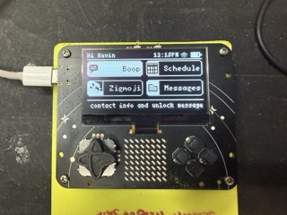
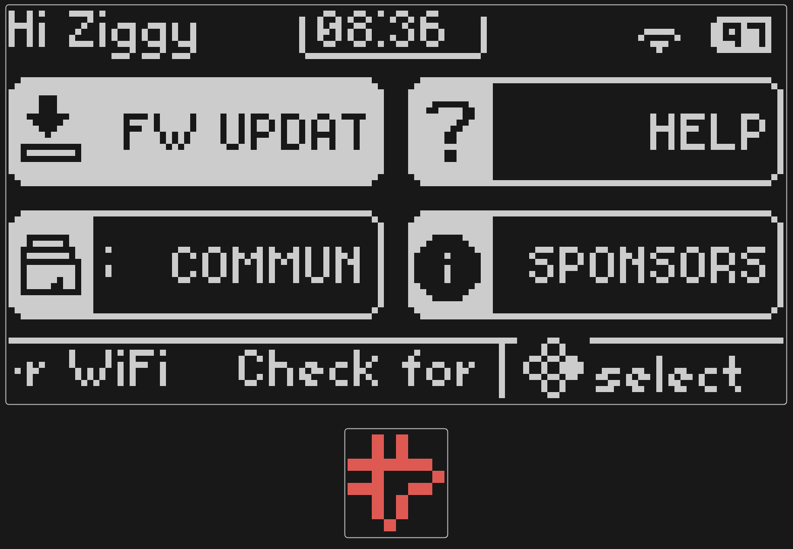
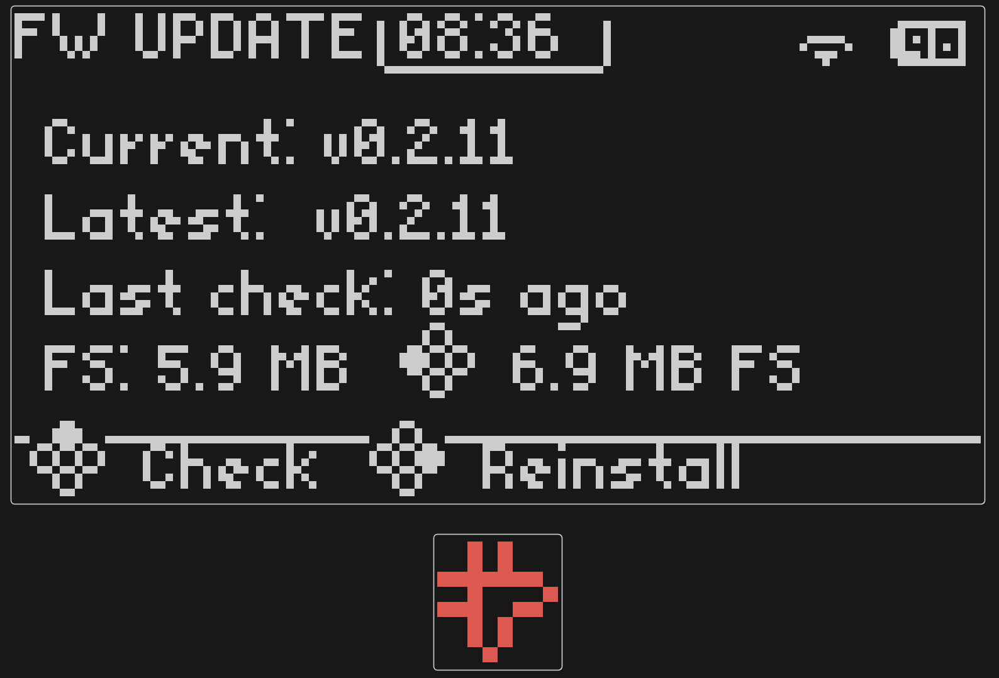
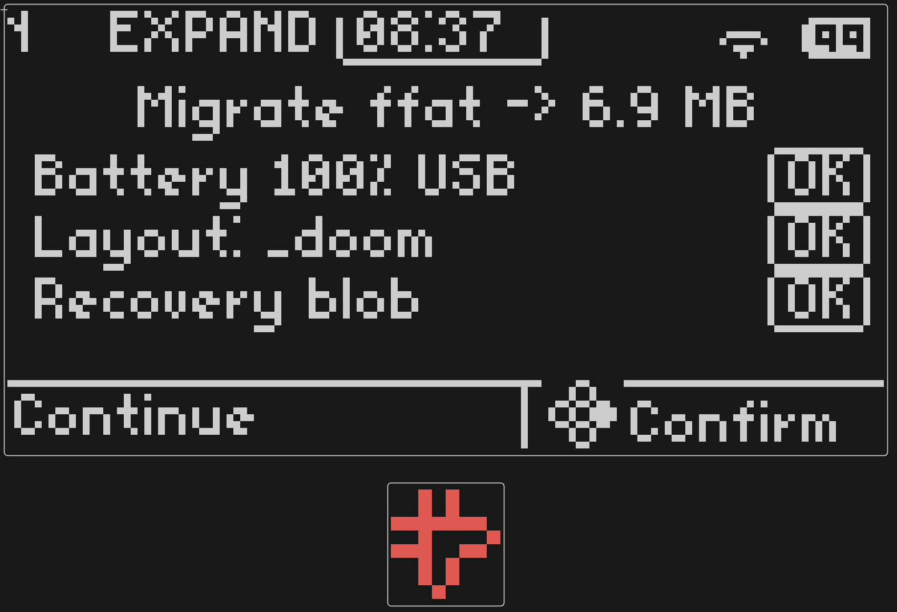
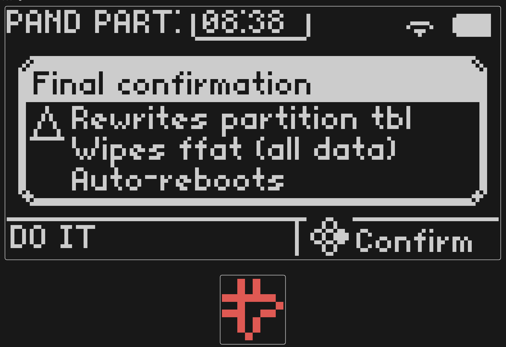
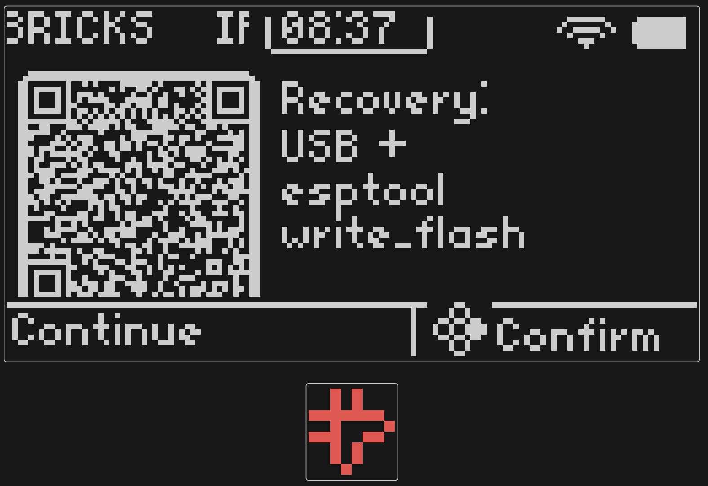

Temporal Badge — MicroPython Developer Guide
Write apps for your conference badge using Python. This guide covers everything from connecting JumperIDE to building multi-file games with LED matrix animations and badge-to-badge IR communication.
For the exhaustive function-by-function reference, see the
API Reference
(also available on-device at /API_REFERENCE.md).
1. What Is This Badge?
The Temporal Badge is a wearable conference badge built on the ESP32-S3-WROOM-1 16N8 module (16 MB flash, 8 MB PSRAM). It runs Arduino C++ firmware with an embedded MicroPython v1.27 runtime, so you can write Python apps that control all the hardware directly.
Hardware at a Glance
| Component | Spec |
|---|---|
| MCU | ESP32-S3-WROOM-1 16N8 (dual-core, 240 MHz, 8 MB PSRAM, 16 MB flash) |
| Display | 128×64 monochrome OLED (SSD1306) |
| LED Matrix | 8×8 red LEDs (IS31FL3731, PWM per pixel) |
| Input | 4 d-pad buttons + analog joystick |
| Motion | LIS2DH12 3-axis accelerometer |
| IR | NEC-protocol TX LED + TSOP receiver |
| Haptics | Vibration motor with coil-tone support |
| Storage | FatFS ffat partition (0x600000 bytes in partitions_replay_16MB_doom.csv, mounted at /apps/) |
| Python heap | 128 KB from PSRAM |
Physical Layout
The badge is held upright during use. When idle (walking around the conference), it rests upside down on the lanyard, and the firmware automatically flips the display to show a nametag.

╭───────────────────────────────────────────────╮
│ ▀▀ IR TX/RX ▀▀ │
│ │
│ ╭───────────────────────────────────────╮ │
│ │ │ │
│ │ 128×64 OLED Display │ │
│ │ (0,0) ───► x │ │
│ │ │ │ │
│ │ ▼ y │ │
│ │ │ │
│ ╰───────────────────────────────────────╯ │
│ │
│ ╭───────────╮ │
│ │ · · · · · │ [Y] │
│ ◉ │ · 8×8 · │ [X] [B] │
│ Joystick │ · LED · │ [A] │
│ │ · Matrix· │ │
│ │ · · · · · │ │
│ ╰───────────╯ │
╰───────────────────────────────────────────────╯
Buttons: [Y] = BTN_UP / BTN_TRIANGLE
[X] = BTN_LEFT / BTN_SQUARE
[B] = BTN_RIGHT / BTN_CIRCLE
[A] = BTN_DOWN / BTN_CROSS
Button mapping:
- Physical:
BTN_UP(Y),BTN_DOWN(A),BTN_LEFT(X),BTN_RIGHT(B) - PlayStation aliases:
BTN_TRIANGLE,BTN_CROSS,BTN_SQUARE,BTN_CIRCLE - Semantic:
BTN_CONFIRM(select/OK),BTN_BACK(cancel/back) — these follow the user's confirm/back swap setting
Orientation and Nametag Mode
The IMU detects when the badge is flipped upside down. The firmware automatically:
- Flips the OLED to show an idle display / nametag
- Rotates button and joystick input to match the new orientation
- Flips the LED matrix
Your app can detect this too — see Flip/Nametag Detection in the Advanced Topics section.
2. Getting Started with JumperIDE
The fastest way to write and test badge code is JumperIDE, a browser-based MicroPython IDE that connects over WebSerial.
Go to https://ide.jumperless.org/ and press the Connect button.
Select the badge serial port from the browser picker.
- On macOS this usually appears as USB/JTAG serial for the ESP32-S3.
- On Windows this appears as a COM port.
- If multiple ports appear, try the one that shows the MicroPython REPL prompt.
Open or create a script, then hit Run / Stop (or press F5).
Press it again to stop. If you make edits, hit the green Save button
(Ctrl+S) to write the file to the badge filesystem.
The REPL terminal at the bottom shows print() output and exceptions.
JumperIDE uses MicroPython raw REPL under the hood, so anything compatible with
raw REPL workflows (including mpremote) also works with the badge.
Tip: type o and Enter at the REPL to dump a block-art screenshot of the
current OLED and LED matrix to the terminal — handy while debugging UI or
capturing reference output for docs. See
Serial screenshots.
File Management
JumperIDE shows the badge filesystem in a tree view. You can:
- Browse
/apps/,/lib/,/tests/ - Open and edit files directly on the badge
- Create new files and directories
- Save changes with
Ctrl+S
3. Your First App
Hello World
import time
oled_clear()
oled_set_cursor(32, 28)
oled_print("Hello Badge!")
oled_show()
led_show_image(IMG_HEART)
time.sleep_ms(3000)
led_clear()
exit()
This clears the OLED, prints centered text, shows a heart on the LED matrix for 3 seconds, then exits back to the menu.
Adding Input
import time
count = 0
while True:
oled_clear()
oled_set_cursor(0, 0)
oled_print("Press buttons!")
oled_set_cursor(0, 20)
oled_print("Count: " + str(count))
oled_show()
if button_pressed(BTN_CONFIRM):
count += 1
haptic_pulse()
led_show_image(IMG_SMILEY)
if button_pressed(BTN_BACK):
break
time.sleep_ms(30)
led_clear()
exit()
Key patterns:
button_pressed()is edge-triggered — it returnsTrueonce per press, thenFalseuntil the button is released and pressed again. Use this for menu navigation.button()is level-triggered — it returnsTrueas long as the button is held. Use this for continuous actions (shooting, accelerating).- Always call
time.sleep_ms(20-30)in your main loop to yield CPU time. - Call
oled_show()after drawing to make changes visible.
Using the Native UI Chrome
For apps that should look like the built-in firmware screens, use badge_ui:
import badge_ui as ui
import time
ui.chrome("My App", "v1.0", "OK", "action", "BACK", "quit")
ui.line(0, "Hello from Python!")
ui.line(1, "This matches the firmware style")
oled_show()
while True:
if button_pressed(BTN_BACK):
break
time.sleep_ms(30)
exit()
badge_ui calls the native C++ UI layout code, so your app's header, footer,
and button glyph icons are pixel-identical to the firmware menus. See
initial_filesystem/lib/badge_ui.py for all available helpers.
4. App Structure
Single-File Apps
Good for quick experiments and small demos. Place a .py file in /apps/:
/apps/my_demo.py
All badge module functions are auto-imported into the global scope — no
import badge needed in single-file apps.
Multi-File Apps
For anything beyond a simple demo, use a folder with a main.py entry point:
/apps/my_game/
main.py # Entry point (tiny — just imports and calls main)
engine.py # Game loop and logic
data.py # Constants, level data
screens.py # OLED rendering functions
icon.py # Optional: app icon bitmap for the menu
The main.py should be minimal:
"""My Game app entry point."""
import sys
APP_DIR = "/apps/my_game"
if APP_DIR not in sys.path:
sys.path.insert(0, APP_DIR)
from engine import main
main()
In your other modules, explicitly import what you need:
from badge import *
import time
import gc
This pattern is used by BreakSnake, Flappy Asteroids, and Synth. The
sys.path.insert lets Python find sibling modules in the app directory.
Showing Up on the Main Menu
Drop a folder with a main.py under /apps/ and the badge picks it up
automatically — both production and dev firmware. No C++ changes needed. The
firmware text-scans the top of main.py for a few optional dunder
assignments and uses them to decorate the main-menu tile:
"""My Game — Tamagotchi-style desk pet."""
__title__ = "My Game"
__description__ = "A tiny pet that lives in your pocket."
__icon__ = "icon.py"
| Dunder | Default | Notes |
|---|---|---|
__title__ |
slug, title-cased (my_game → My Game) |
max 19 chars |
__description__ |
empty | max 63 chars; shown on the tile's detail panel |
__icon__ |
tries icon.py opportunistically |
path to a 12×12 packed XBM tuple |
__matrix_title__ |
__title__ |
label in the MATRIX APPS picker |
__order__ |
10000 + discovery index |
signed int; lower = earlier on grid |
Icon File (icon.py)
A 12×12 monochrome XBM, two bytes per row × 12 rows = 24 bytes. Bit 0 of
each byte is the leftmost pixel (U8G2 drawXBM order). The high 4 bits of
every odd byte are unused.
"""My Game icon."""
WIDTH = 12
HEIGHT = 12
# Two bytes per row, binary literals so the dots are visible in the
# source. XBM byte order is LSB-first, so the literal reads mirrored
# relative to the rendered icon — that's fine, equivalence at the bit
# level is what matters.
DATA = (
0b01110111, 0b00000111,
0b01110111, 0b00000111,
0b00000000, 0b00000000,
0b01100000, 0b00000000,
0b01100000, 0b00000000,
0b11111100, 0b00000011,
0b00000000, 0b00000000,
0b00111110, 0b00000000,
0b00100000, 0b00000000,
0b11100000, 0b00000011,
0b00000000, 0b00000010,
0b11000000, 0b00000011,
)
If __icon__ is omitted the firmware tries /apps/<slug>/icon.py anyway,
so most apps just need to ship a file with that name.
Hot-Refresh
After editing any of main.py, icon.py, or matrix.py, refresh the menu
without rebooting:
import badge
badge.rescan_apps()
The dev firmware also surfaces a generic Apps screen that lists every .py
under /apps/ (single-file or folder), useful for one-off scripts you don't
want on the main grid.
Limits
- 32 dynamic apps per badge.
- Slugs must match
[A-Za-z0-9_-]+and not start with.. - The dunder scanner only reads the first ~2 KB of
main.py. Put your manifest at the very top of the file.
Tile Order
Three layers, each overriding the next, feed a signed-int sort key:
- Defaults. Curated tiles use
10 × array index(withSETTINGSpinned to30000), dynamic apps use10000 + discovery index. - App manifest (
__order__ = 50). - User override stored in NVS by the manual reorder screen.
The menu is then stable-sorted by that key, so duplicate values keep the
placement order from the previous layer. Negative keys land before any
curated tile; large keys land near SETTINGS. Inspired typical picks:
__order__ = -10 # before BOOP
__order__ = 25 # between MAP (30) and SCHEDULE (40)
__order__ = 9999 # nearly last
User Reorder
Players can rearrange the grid themselves via Settings → Menu → Reorder:
| Button | Action |
|---|---|
| Joystick Y | Move cursor up/down |
X |
Pick up / drop a row |
A (confirm) |
Save and rebuild |
B (back) |
Cancel |
While picked up, joystick Y drags the row in real time. Save writes a
per-label override into the menu_order NVS namespace; the rebuilder
reads those overrides on the next refresh (immediate after save, and on
every boot). Settings → Menu → Reset Order wipes the namespace and
returns every tile to its default order.
Persistent Matrix Apps
Drop a matrix.py next to main.py and your app gets a slot in the
MATRIX APPS picker (firmware menu → MATRIX APPS). Selecting it persists
the choice in /led_state.json so the badge runs your matrix animation
across reboots, even when no foreground Python app is open.
The script registers a tick callback with
matrix_app_start and returns
immediately:
"""Slow drifting dot."""
__matrix_title__ = "Drift"
import badge
_phase = 0
def _tick(now_ms):
global _phase
_phase = (_phase + 1) & 7
frame = [0] * 8
frame[7] = 0x80 >> _phase
badge.led_set_frame(frame)
badge.matrix_app_start(_tick, 250, 24)
The callback runs from the firmware's matrix service pump — same context as
any other matrix_app_start callback — so the same constraints apply: keep
it fast, don't block, and don't sit in a while True loop. See
Section 6 → LED Matrix for details.
A real example lives in /apps/tardigotchi/matrix.py: it reads
/tardigrade_save.json, walks a growing pet glyph along the bottom rows,
cycles heart/drumstick/face status icons across the top, and pulses the
haptic motor for Tamagotchi-style beeps. Stat decay continues at 1/10 the
foreground game's pace and is written back to the save file so the
foreground app sees the ambient progress next time you launch it.
Switching to any built-in mode (Sparkle, Off, etc.) — or to a different
matrix app — cleanly stops the previous callback. There is no need to call
matrix_app_stop() from your script; the firmware tears it down for you on
mode change.
Saving Data
There are two ways to persist data, and the choice matters:
Use badge.kv for state that must survive a reflash — game saves,
high scores, user prefs. NVS is invariant across firmware updates,
factory reflashes, and Community Apps installs.
import badge
# Read with a default; write any str/int/float/bytes value.
hi = badge.kv_get("hi_breaksnake", 0)
hi += 1
badge.kv_put("hi_breaksnake", hi)
Or via the friendlier wrapper baked into /lib/badge_kv.py:
from badge_kv import kv
kv.put("hi_breaksnake", kv.get("hi_breaksnake", 0) + 1)
Limits: 15 chars per key, 1 KB per value, 64 keys per badge.
Supported value types: str, int, float, bytes.
Use the filesystem for replaceable content — caches, downloaded
data, large blobs over 1 KB. FATFS files survive a firmware-only
reflash but are wiped by a fatfs.bin reflash or a JumperIDE
"Sync Filesystem" with --clear-extras:
# Fine — it's a cache that can be rebuilt.
import json
with open("/cache/last_query.json", "w") as f:
f.write(json.dumps(result))
Why this matters: as of firmware v0.2, only
/liband/matrixAppsare baked into the firmware image. Everything else (your app, docs, images, the DOOM WAD) ships via factoryfatfs.binflash and can be re-pushed via Community Apps or JumperIDE. State you care about belongs in NVS so it can't get wiped by a reflash. See Storage Model for the full survival matrix.
5. MicroPython Cheat Sheet
Available Modules
| Module | Notes |
|---|---|
sys |
sys.path, sys.exit() |
os |
Filesystem: listdir, mkdir, remove, stat |
time |
sleep_ms(), ticks_ms(), ticks_diff() |
random |
randint(), choice(), uniform() |
math |
sin(), cos(), sqrt(), pi |
cmath |
Complex math |
struct |
pack(), unpack() for binary data |
array |
Typed arrays |
binascii |
hexlify(), unhexlify() |
json |
loads(), dumps() |
collections |
OrderedDict, namedtuple |
errno |
Error constants |
gc |
collect(), mem_free(), mem_alloc() |
io |
StringIO, BytesIO |
micropython |
mem_info(), stack_use() |
uctypes |
C-compatible struct access |
badge |
All badge hardware (auto-imported) |
Key Differences from CPython
f-strings are supported. You can use normal MicroPython string formatting:
score = 42
print(f"Score: {score}")
print("Score: " + str(score)) # also fine
Time functions use milliseconds:
import time
time.sleep_ms(100) # 100 ms
time.sleep(1) # 1 second (float OK)
start = time.ticks_ms()
# ... do work ...
elapsed = time.ticks_diff(time.ticks_ms(), start)
Use a cooperative main loop. Long-running computation in the foreground loop
can block input/render responsiveness, so keep per-frame work small and
use sleep_ms() to yield.
Memory is limited. The Python heap is 128 KB from PSRAM. Call
gc.collect() periodically in long-running apps, especially after releasing
large objects:
import gc
gc.collect()
print("Free:", gc.mem_free(), "bytes")
No pip / external packages. Only the modules listed above are available.
Shared code goes in /lib/ (which is on sys.path).
For the full MicroPython language reference: docs.micropython.org
6. Hardware Guide
OLED Display (128×64)
The coordinate system has (0, 0) at the top-left corner. X ranges from
0–127, Y from 0–63. The display is buffered — draw to the buffer, then call
oled_show() to push it to the screen.
Text rendering:
oled_clear()
oled_set_cursor(0, 0)
oled_print("Top-left")
oled_set_cursor(0, 30)
oled_set_text_size(2)
oled_print("BIG")
oled_set_text_size(1)
oled_show()
Centering text:
text = "Centered!"
w = oled_text_width(text)
x = (128 - w) // 2
oled_set_cursor(x, 28)
oled_print(text)
oled_show()
Fonts:
fonts = oled_get_fonts().split(",")
for f in fonts:
oled_set_font(f)
oled_clear()
oled_set_cursor(0, 20)
oled_print(f)
oled_show()
time.sleep_ms(500)
Drawing primitives:
oled_set_pixel(64, 32, 1) # Single pixel
oled_draw_box(10, 10, 50, 20) # Filled rectangle
oled_set_draw_color(2) # XOR mode
oled_draw_box(20, 5, 30, 30) # XOR overlay
oled_set_draw_color(1) # Back to white
oled_show()
Framebuffer access for advanced effects:
fb = oled_get_framebuffer() # bytes object, 1024 bytes
w, h, size = oled_get_framebuffer_size()
buf = bytearray(fb)
# Modify buf...
oled_set_framebuffer(buf)
oled_show()
Drawing XBM bitmaps from Python. The badge has no native oled_draw_xbm
helper, but you can blit a 1-bit XBM by walking the bytes and calling
oled_set_pixel for each lit bit. XBM is LSB-first within each byte, so
bit 0 is the leftmost pixel:
def draw_xbm(bits, offset, w, h, x0, y0):
stride = (w + 7) // 8
for row in range(h):
base = offset + row * stride
for col_byte in range(stride):
byte = bits[base + col_byte]
if not byte:
continue
for bit in range(8):
col = (col_byte << 3) + bit
if col >= w:
break
if byte & (1 << bit):
oled_set_pixel(x0 + col, y0 + row, 1)
The apps/credits.py app uses exactly this pattern to render 30×30
dithered headshots — see it for a complete worked example. Bulk sprite
data lives in a BITS blob generated by scripts/gen_credit_xbms.py,
which keeps the Python app in sync with the C++ AboutCredits.h header.
LED Matrix (8×8)
An 8×8 red LED grid centered below the OLED. Each LED has individual PWM brightness (0–255). The matrix has a separate global brightness control.
Basic operations:
led_brightness(40) # Set global brightness
led_clear() # All off
led_fill() # All on
led_set_pixel(3, 3, 100) # Single LED at (3,3)
val = led_get_pixel(3, 3) # Read brightness back
Built-in images and animations:
led_show_image(IMG_HEART)
time.sleep_ms(1000)
led_start_animation(ANIM_PULSE_HEART, 100)
time.sleep_ms(3000)
led_stop_animation()
Custom bitmask frames:
Each row is a byte where bit 7 is the leftmost pixel:
# Checkerboard pattern
led_set_frame([
0b10101010,
0b01010101,
0b10101010,
0b01010101,
0b10101010,
0b01010101,
0b10101010,
0b01010101,
], 60)
Foreground override — prevent the ambient LED mode from clobbering your drawing:
led_override_begin()
# ... draw on the matrix ...
led_set_pixel(0, 0, 255)
# ... when done:
led_override_end()
Background callbacks — register a Python function that the firmware calls periodically to animate the matrix while your main loop does other things:
phase = 0
def spinner(now_ms):
global phase
led_clear()
x = phase % 8
for y in range(8):
led_set_pixel(x, y, 80)
phase += 1
matrix_app_start(spinner, 80, 30)
# ... main loop handles OLED and input ...
# The spinner runs in the background via the service pump
matrix_app_stop() # When done
Buttons
Four face buttons arranged in a d-pad layout. Use the semantic constants
(BTN_CONFIRM, BTN_BACK) for menu-style interaction, and physical constants
(BTN_UP, BTN_DOWN, BTN_LEFT, BTN_RIGHT) for game controls.
# Edge-triggered — fires once per press
if button_pressed(BTN_CONFIRM):
do_action()
# Level-triggered — true while held
if button(BTN_UP):
move_up()
# Hold duration
ms = button_held_ms(BTN_DOWN)
if ms > 1000:
long_press_action()
Escape chord: Holding all four face buttons for ~1 second force-exits any running app. This is a firmware safety net — you don't need to implement it.
Joystick
A 2-axis analog joystick returning raw ADC values (0–4095). Center position is approximately 2048, but varies per unit.
x = joy_x() # 0 = full left, 4095 = full right
y = joy_y() # 0 = full up, 4095 = full down
# Dead zone handling
CENTER = 2048
DEAD = 300
dx = x - CENTER
dy = y - CENTER
if abs(dx) < DEAD:
dx = 0
if abs(dy) < DEAD:
dy = 0
IMU (Accelerometer)
The LIS2DH12 accelerometer provides tilt sensing and motion detection.
if not imu_ready():
oled_println("No IMU!")
# Tilt values in milli-g (±1000 typical)
tx = imu_tilt_x()
ty = imu_tilt_y()
# Map tilt to LED position
px = int((tx + 1000) * 7 / 2000)
py = int((ty + 1000) * 7 / 2000)
px = max(0, min(7, px))
py = max(0, min(7, py))
led_clear()
led_set_pixel(px, py, 80)
# Motion detection (edge-triggered)
if imu_motion():
oled_println("Shake detected!")
# Orientation detection
if imu_face_down():
oled_println("Badge is flipped!")
Haptics
The vibration motor supports haptic feedback pulses and audible coil tones.
haptic_pulse() # Default pulse
haptic_pulse(200, 50) # Stronger, 50ms
haptic_pulse(255, 100, 150) # Full, 100ms, 150Hz carrier
haptic_off() # Stop immediately
Coil tones — at low duty cycles, the motor coil vibrates audibly:
# Play a scale
notes = [262, 294, 330, 349, 392, 440, 494, 523]
for freq in notes:
tone(freq, 200)
time.sleep_ms(250)
# Continuous tone
tone(440)
time.sleep_ms(1000)
no_tone()
# Check if playing
if tone_playing():
oled_println("Playing!")
IR Send/Receive
Infrared communication using a modified NEC protocol. The IR LED is at the top of the badge, and the TSOP receiver is next to it.
You must call ir_start() before using any IR functions. IR hardware is
shared with the Boop screen — Python gets exclusive access while IR mode is
active.
Simple frames (1 byte address + 1 byte command):
ir_start()
# Send
ir_send(0x42, 0x01)
# Receive
time.sleep_ms(200)
if ir_available():
frame = ir_read()
if frame:
addr, cmd = frame
oled_println("Got: " + hex(addr) + " " + hex(cmd))
ir_stop()
Multi-word frames (up to 64 × 32-bit words):
ir_start()
# Send a 3-word payload (CRC appended automatically)
ir_send_words([0xB0, 0xDEADBEEF, 0x12345678])
# Receive
words = ir_read_words()
if words:
oled_println("Got " + str(len(words)) + " words")
ir_flush() # Clear RX queue
ir_stop()
Timing constraint: Poll ir_read() or ir_read_words() within 50 ms
or the IRremote buffer on Core 0 may overflow.
TX power control:
ir_start()
print(ir_tx_power()) # Default: 50 (percent of 38kHz carrier)
ir_tx_power(10) # Throttle down for close-range testing
IR Playground Modes (consumer NEC + raw symbols)
The badge multi-word transport is the badge's own dialect — ir_send_words /
ir_read_words always include a CRC32 trailer that real consumer remotes
don't speak, so as shipped the badge only talks to other badges.
ir_set_mode() swaps in alternate routing for the same RMT hardware so
MicroPython can record and replay arbitrary remotes:
| Mode | Talks to | Sends with | Receives via |
|---|---|---|---|
badge |
other badges | ir_send_words(...) |
ir_read_words() |
nec |
NEC TVs / audio gear | ir_nec_send(addr,cmd) |
ir_nec_read() |
raw |
any IR protocol | ir_raw_send(buf) |
ir_raw_capture() |
Mode is a queue routing flag — switching does not tear down the channel.
Switching is rejected while a Boop is in flight; on ir_stop() mode resets
to badge so badge↔badge pairing is always safe after the app exits.
ir_start()
ir_set_mode("nec")
ir_nec_send(0x04, 0x08, repeats=2) # NEC Samsung-ish power code
frame = ir_nec_read() # (addr, cmd, is_repeat) or None
if frame:
addr, cmd, is_repeat = frame
print(addr, cmd, is_repeat)
ir_set_mode("badge")
ir_stop()
Raw symbol capture and playback for non-NEC protocols (Sony, RC5/6, unusual AC remotes):
ir_set_mode("raw")
buf = ir_raw_capture() # bytes of packed (mark_us, space_us) uint16 pairs
if buf:
# buf is a bytes object: 4 bytes per (mark, space) pair, little-endian
ir_raw_send(buf, 38000) # replay at 38 kHz carrier
Raw buffers are little-endian uint16 (mark_us, space_us) pairs — exactly
the layout the ESP32 RMT hardware uses internally. ir_raw_send() accepts an
optional carrier frequency in Hz (default 38000, valid range 3000–60000) so
the same call covers Sony's 40 kHz, RC5's 36 kHz, etc. Up to 512 pairs per
buffer (~30 ms of wire time, enough for any normal AC remote).
7. Advanced Topics
Mouse Overlay
A hardware-composited cursor overlay for building point-and-click GUIs. When enabled, the joystick moves a cursor sprite and button presses become click events.
import time
mouse_overlay(True)
mouse_set_pos(64, 32)
mouse_set_speed(4)
mouse_set_mode(MOUSE_RELATIVE)
while True:
oled_clear()
oled_set_cursor(0, 0)
oled_print("X:" + str(mouse_x()) + " Y:" + str(mouse_y()))
oled_show()
btn = mouse_clicked()
if btn == BTN_CONFIRM:
haptic_pulse()
if btn == BTN_BACK:
break
time.sleep_ms(30)
mouse_overlay(False)
Custom cursor sprites:
# 8×8 crosshair (MSB-first, row-major)
crosshair = bytes([
0b00010000,
0b00010000,
0b00010000,
0b11101110,
0b00010000,
0b00010000,
0b00010000,
0b00000000,
])
mouse_set_bitmap(crosshair, 8, 8)
The bitmap format is 1-bit-per-pixel, MSB-first within each byte, row-major. Maximum size is 32×32 (128 bytes). The hot-spot is automatically set to the sprite center.
Flip/Nametag Detection
When the badge hangs upside down on its lanyard, the firmware automatically enters nametag mode — flipping the OLED, LED matrix, and input orientation. This happens transparently through the service pump.
Your app can detect and respond to orientation changes:
import time
while True:
if imu_face_down():
oled_clear()
oled_set_cursor(20, 28)
oled_print("Walking mode!")
oled_show()
else:
oled_clear()
oled_set_cursor(20, 28)
oled_print("Active mode!")
oled_show()
time.sleep_ms(200)
You can also use imu_tilt_y() for a continuous tilt value — negative values
mean the badge is tilted toward upside-down. The firmware uses a threshold on
this to trigger the nametag flip.
Possible use cases:
- Show a custom idle animation when the badge is face-down
- Display a QR code or name badge when inverted
- Pause a game when the badge is flipped
Native UI Chrome
For apps that should look like built-in firmware screens, use the native UI
helpers directly or through badge_ui:
Direct native calls:
oled_clear()
ui_header("My App", "v1.0")
ui_action_bar("OK", "start", "BACK", "quit")
# Draw content between header and footer (Y: 10–52)
oled_set_cursor(4, 20)
oled_print("Content here")
oled_show()
Through badge_ui (recommended):
import badge_ui as ui
ui.chrome("My App", "v1.0", "OK", "start", "BACK", "quit")
ui.line(0, "First line")
ui.line(1, "Second line")
ui.selected_row(2, "Selected item")
oled_show()
The badge_ui module provides additional helpers: ui.center(),
ui.fit(), ui.text(), ui.fill(), ui.hline(), ui.vline(),
ui.frame(), ui.status_box(), ui.spinner(), and composable hint
functions (ui.hint(), ui.hint_text(), ui.hint_row()).
Button glyph names for ui_action_bar and inline hints: OK, BACK, X,
Y, A, B. These render as small button-shaped icons and respect the
badge's confirm/back swap setting.
Serial screenshots (OLED + LED)
The firmware can dump the live OLED framebuffer and 8×8 LED matrix to the USB serial console as bordered Unicode block art. This is the fastest way to inspect display state without a camera — and the workflow we use when capturing UI screenshots for this guide.
REPL hotkey: at the MicroPython REPL (JumperIDE terminal, mpremote, or
serial_log.py), type a bare o and press Enter. That evaluates the global
o singleton, whose repr/print handler calls screenshot() with default
arguments (half-block OLED + square LED, ANSI red for lit LEDs). print(o)
works the same way. Rebinding (o = 42) disables the hotkey until reboot.
From code:
screenshot() # OLED + LED together (default mode 0)
oled_screenshot(1) # OLED only — smallest square pixels
led_screenshot(1, False) # LED only — no ANSI colour
screenshot(0.5) # compact quarter-block OLED + tiny LED
Mode ladder (same semantics for oled_screenshot, led_screenshot, and
screenshot; see API Reference for the full table):
| Argument | OLED output | Typical use |
|---|---|---|
0.5 (float) |
Quarter-block, 64×32 chars | Smallest dump |
0 (int) |
Half-block, 128×32 chars | Default for screenshot() |
1, 2, … (int) |
Square pixels, 2N×N chars per pixel | Readable detail |
1.5, 2.5, … (float) |
Tall, ~1 char per pixel | Literal pixel grid |
Terminal tips:
- Use a monospace font whose cells are roughly 2× taller than wide (most
terminal fonts). Half-block glyphs (
▀▄█) then read as square pixels. - ANSI colour (
ansi=True, the default) needs a real terminal — PlatformIO's device monitor prints escape codes literally. Passscreenshot(0, False)if your capture tool chokes on colour. - Navigate to the screen you want, trigger the dump, then screenshot or copy from the terminal. For polished docs images, crop the terminal capture or photograph the physical badge; the serial dump is for verification and quick iteration while writing apps.
8. Badge-to-Badge Communication
The IR hardware lets two badges exchange data when pointed at each other. This enables multiplayer games, contact exchange, and collaborative apps.
Simple Ping-Pong
Two badges take turns sending and receiving:
import time
ir_start()
my_id = my_uuid()
oled_clear()
oled_println("IR Chat")
oled_println("CONFIRM = send")
oled_println("Waiting...")
oled_show()
while True:
# Send on button press
if button_pressed(BTN_CONFIRM):
ir_send(0x42, 0x01)
oled_println("Sent!")
oled_show()
haptic_pulse()
# Check for incoming
if ir_available():
frame = ir_read()
if frame:
addr, cmd = frame
oled_println("Got: " + hex(cmd))
oled_show()
led_show_image(IMG_HEART)
time.sleep_ms(500)
led_clear()
if button_pressed(BTN_BACK):
break
time.sleep_ms(30)
ir_stop()
exit()
Richer Data with Multi-Word Frames
For sending more than 2 bytes, use multi-word frames (up to 256 bytes of payload):
import time
import struct
ir_start()
def send_position(x, y, score):
# Pack 3 values into 3 words
ir_send_words([x, y, score])
def receive_position():
words = ir_read_words()
if words and len(words) >= 3:
return words[0], words[1], words[2]
return None
# Game loop
while True:
if button_pressed(BTN_CONFIRM):
send_position(joy_x(), joy_y(), 42)
pos = receive_position()
if pos:
x, y, score = pos
oled_clear()
oled_println("Peer: " + str(x) + "," + str(y))
oled_println("Score: " + str(score))
oled_show()
if button_pressed(BTN_BACK):
break
time.sleep_ms(30)
ir_stop()
Tips for IR Communication
- Always call
ir_start()first andir_stop()when done - Poll
ir_read()within 50 ms to avoid buffer overflow - A classic frame takes ~110 ms on wire; a 3-word frame takes ~230 ms
- Use
ir_flush()to clear stale frames before starting a new exchange ir_tx_power(10)is useful for testing with two badges close together- IR is line-of-sight — badges need to be roughly pointed at each other
9. Firmware Updates & Community Apps
The badge can update its own firmware over WiFi from GitHub Releases, and can fetch installable apps + user files (like the DOOM WAD) from a configurable Community Apps registry. Both systems are user-driven — the badge checks once a day in the background, but never installs anything without an explicit Confirm.
Where state lives (mental model)
Three storage tiers; one rule: state in NVS, code on FATFS.
| Tier | Holds | Survives a... |
|---|---|---|
| NVS | badge ID, WiFi creds, contacts, badgeInfo, badge.kv saves |
every flash type |
| FATFS | Python source, docs, images, doom1.wad, user uploads | firmware-only flash; wiped by fatfs.bin reflash + --clear-extras sync |
| app0 | C++ binary + survival floor (/lib, /matrixApps) |
replaced only by a firmware flash |
Putting game saves in badge.kv (see § 4 Saving Data) means a
firmware reflash, factory flash, or Community Apps install never
loses them. Files on FATFS are re-pushable via JumperIDE / Community
Apps / python3 -m badge_sync sync. See the
Storage Model
for the full survival matrix.
What the user sees
- Status bar glyph. A small down-arrow appears immediately to the left of the WiFi icon when a newer firmware release has been cached. It disappears as soon as the install completes.
- "FW UPDATE" home tile. Always visible. Label flips to UPDATE (with a notification badge dot) when an update is waiting; otherwise it reads as a "Check Updates" affordance. Confirm enters the Firmware Update screen.

- "COMMUNITY APPS" home tile. Always visible. Opens the Community Apps screen — a list of every entry in the remote registry with per-row status (OK for installed, UPD for update available,
blank for not installed). The legacy "Asset Library" / "LIBRARY"
label was renamed in v0.2 firmware. Empty when community_apps_url
isn't configured (the default firmware ships with a working URL,
so this only happens if you explicitly clear it).
Update cadence
The badge polls api.github.com/repos/<owner>/<repo>/releases/latest
at most once every 24 hours, only when WiFi is connected. State
(latest tag, asset URL, last-check timestamp) is persisted in NVS so
the indicator survives reboots and offline use. Manual "Check now"
from the Firmware Update screen ignores the cooldown.
Installing a firmware update
- Open FW UPDATE from the home grid.
- Press Confirm to install (or to re-check, if you're already on the latest version). Battery must be ≥ 30 % unless USB is plugged in.
- The screen shows a progress bar as the new image streams into the inactive OTA slot. Do not unplug.
- The badge reboots into the new image. If it fails to boot, the bootloader rolls back automatically on the next reset — there is no way for an OTA to brick the badge as long as it has power.

When a wider ffat partition is available but the volume header still
reflects the old size, the same screen shows a filesystem line such as
FS: 5.9 MB ◇ 6.9 MB FS — the diamond glyph is the expand affordance
(see Expanding storage below).
Community Apps
The registry is a single JSON file the badge fetches once a day. Each
entry has an id, version, download url, optional SHA-256, and a
filesystem dest_path (or dest_dir for multi-file apps). The badge
streams each file into a .tmp, verifies the hash if present, then
atomically renames into place.
The DOOM tile uses this transparently: if /doom1.wad is missing on
the filesystem, DOOM → Confirm routes you to the Community Apps
detail page for the WAD with a one-tap Install button. No need
to sideload via uploadfs.
Pushing files via JumperIDE
JumperIDE (ide.jumperless.org) is the easiest non-WiFi path for
getting files onto the badge:
- Save (
Ctrl+S) writes the open file to the badge over USB, same asmpremote cpwould. - Sync Filesystem (planned button next to the firmware-update
modal) does a one-click diff: it lists everything currently on
the badge, compares against the upstream
firmware/data/manifest.json, and pushes anything missing or stale. Useful after a firmware-only reflash where you want to refresh apps without losing your local edits.
If you prefer a CLI: python3 firmware/scripts/badge_sync.py sync /dev/cu.usbmodemXXXX
does the same diff from a shell. Disconnect any active serial monitor
first (the badge port is single-owner). See
firmware/docs/STORAGE-MODEL.md for full options.
Re-flashing the FATFS partition
Two ways to repopulate everything (apps, docs, images, the DOOM WAD) without touching firmware:
cd firmware
# Always use the bundled pio binary — the macOS / micromamba shell `pio`
# shim often resolves to a Python without platformio installed.
~/.platformio/penv/bin/pio run -e echo -t uploadfs
This builds fatfs.bin from firmware/data/ (mirror of
firmware/initial_filesystem/) and writes it directly to the badge's
ffat partition. Includes /doom1.wad (4 MB) which is otherwise
downloaded over WiFi via Community Apps. NVS state (game saves,
contacts, badge identity) is untouched.
If you see ModuleNotFoundError: No module named 'platformio', that's
the system pio shim issue — call the bundled binary by absolute
path as shown above.
settings.txt keys
[ota]
# Override the default GitHub Releases endpoint (advanced; usually
# leave empty to use the build-baked default).
manifest_url =
# URL of the Community Apps registry JSON. Empty disables the
# Community Apps tile. The legacy `asset_registry_url` key still
# works for backwards compatibility.
community_apps_url = https://raw.githubusercontent.com/Architeuthis-Flux/Temporal-Replay-26-Badge/main/registry/community_apps.json
community_apps.json schema (v2)
Two entry kinds: single files and multi-file app bundles.
{
"schema_version": 2,
"assets": [
{
"id": "doom1-shareware",
"kind": "file",
"name": "DOOM 1 Shareware WAD",
"version": "1.9",
"url": "https://...doom1.wad",
"sha256": "<64 hex>",
"size": 4196020,
"dest_path": "/doom1.wad",
"min_free_bytes": 4500000,
"description": "..."
},
{
"id": "tardigotchi",
"kind": "app",
"name": "Tardigotchi",
"version": "8b139b84ef0b",
"dest_dir": "/apps/tardigotchi",
"size": 33744,
"description": "Hatch and care for a tiny tardigrade.",
"files": [
{"path": "/main.py", "size": 187, "sha256": "...", "url": "https://..."},
{"path": "/engine.py", "size": 24006, "sha256": "...", "url": "https://..."},
{"path": "/icon.py", "size": 9551, "sha256": "...", "url": "https://..."}
]
}
]
}
App bundle file lists are inlined directly into the registry — there's
no per-app manifest.json. registry/community_apps.json is
auto-generated by firmware/scripts/generate_startup_files.py from
firmware/initial_filesystem/; drop your app folder there and re-run
the script (or trigger a PlatformIO build). The legacy
registry/registry.json (schema v1) is frozen for backwards
compatibility; new entries go into v2.
See firmware/docs/OTA-MAINTAINER.md in the firmware repo for the
full maintainer walkthrough, including how to host the registry on
Cloudflare R2 / Pages.
Expanding storage after a partition bump
Sometimes a firmware update ships with a wider ffat partition (the
2026 v0.1.5 bump grew the FAT partition from 6 MB to ~7.9 MB to reuse
unused flash). The new firmware will boot fine on existing badges and
keep all your data — but the FAT volume header is still sized for the
old partition, so you only see the old capacity until a reformat
writes a new header.
When this happens, the Firmware Update screen shows a filesystem line
with the current size and an expand affordance (e.g. FS: 5.9 MB ◇ 6.9 MB FS).
Select the diamond glyph on that line to start the reformat flow:
- Preflight — battery/USB, partition layout, and recovery blob checks must all pass before Continue is offered.

- First confirm: shows what gets wiped (contacts, nametags, WAD,
settings.txt). - Final confirmation — warns that the partition table is rewritten,
ffatis wiped, and the badge auto-reboots.

- The badge formats
ffatand reboots into a clean filesystem with the full partition size available.
A recovery QR on the expand path documents the USB + esptool write_flash
fallback if anything goes wrong mid-migration:

The option only appears when there's a real gap to recover (≥ 256 KB above what FAT metadata explains away). On freshly USB-flashed badges, the FAT is sized to the partition at first boot and you'll never see this prompt.
Forking the firmware
To point OTA at a different repo (or look for a different asset
filename in the release), edit firmware/platformio.ini:
'-DOTA_GITHUB_REPO="YourOrg/YourFork"'
'-DOTA_ASSET_NAME="firmware-yourfork.bin"'
The badge will look for an asset of exactly that name on the latest release of the configured repo.
Security stance
This is open-source firmware. There is no image signing, no certificate pinning, no PIN, no auth. SHA-256 hashes are corruption checks, not signatures. The threat model is "don't brick the badge", which is mitigated by:
- battery ≥ 30 % guard (unless USB is plugged in),
- bootloader auto-rollback if the new image fails to boot,
- atomic rename for asset files.
If your fleet needs a hardened OTA, fork firmware/src/ota/ and
bring your own keys.
10. Tips and Gotchas
Memory Management
- 128 KB heap. Call
gc.collect()regularly, especially in game loops. - Avoid creating large temporary objects. Reuse buffers when possible.
- Check available memory:
gc.mem_free()returns bytes free. - Source files have a ~16 KB limit per file due to the MicroPython compiler. Split large apps into multiple modules.
Display
oled_show()is required after any drawing operation. Nothing appears on screen until you call it.oled_clear()resets the cursor to (0,0). PassTrueto also refresh:oled_clear(True).- The display is 128×64 — plan your layouts accordingly. The usable area with
badge_uichrome is roughly Y: 10–52 (between header and footer).
LED Matrix
- Use
led_override_begin()/led_override_end()when drawing directly on the matrix. Without it, the ambient LED mode may overwrite your pixels. led_clear()at the end of your app to be a good citizen.- Matrix app callbacks (
matrix_app_start) run from the service pump, not your main loop — keep them fast (no blocking, no heavy computation).
IR
- IR is mode-gated — only works after
ir_start(). Other screens (Boop) share the hardware. - The RX buffer is 8 frames deep. If you don't read within ~50 ms per frame, frames get dropped.
- Always
ir_stop()andir_flush()in your cleanup code.
Input
button_pressed()consumes the event — calling it twice for the same button in the same loop iteration will miss the second call. Read it once and store the result.- The joystick center varies per unit (~2048 typical). Always use a dead zone of at least 200–300.
General
- f-strings are available, but string concatenation also works.
- No
import badgeneeded in the entry script — all functions are auto-injected. In imported modules, usefrom badge import *. - Escape chord: Hold all 4 face buttons for ~1 second to force-exit any stuck app.
- Clean up before exiting:
led_clear(),haptic_off(),no_tone(),ir_stop(),mouse_overlay(False).
Updates & WiFi
- WiFi is required for OTA and Community Apps. Configure it once via Settings → WiFi Setup. The badge auto-connects on boot. JumperIDE works over USB so it can push files without WiFi.
- Don't unplug during a firmware install. A brownout mid-flash is the only thing that can leave the badge in a bad state — and even then the bootloader will roll back on the next reset.
- Asset downloads can take several minutes on slow conference WiFi (the DOOM WAD is 4 MB). The progress screen shows live KB counts; if it stalls for more than 30 s, cancel and retry.
Quick Reference Card
┌──────────────────────────────────────────────────┐
│ OLED (128×64) │
│ oled_clear() → oled_print() → oled_show() │
│ │
│ LED Matrix (8×8) │
│ led_show_image(IMG_HEART) │
│ led_set_frame([row0..row7], brightness) │
│ │
│ Buttons │
│ button_pressed(BTN_CONFIRM) → True once │
│ button(BTN_UP) → True while held │
│ │
│ Joystick │
│ joy_x() → 0–4095 joy_y() → 0–4095 │
│ │
│ Haptics │
│ haptic_pulse() tone(440, 200) │
│ │
│ IR │
│ ir_start() → ir_send(a,c) → ir_read() → tuple │
│ │
│ IMU │
│ imu_tilt_x() imu_motion() imu_face_down() │
│ │
│ Mouse │
│ mouse_overlay(True) → mouse_clicked() → btn_id│
│ │
│ Files │
│ open("/apps/x/save.json","w").write(data) │
│ │
│ Exit │
│ exit() or hold all 4 buttons │
└──────────────────────────────────────────────────┘